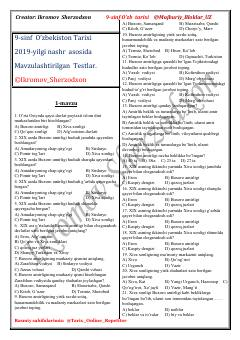

9O9-sinf O'zbekiston tarixi fanidan mavzulashtirilgan testlar to'plami.
Mazkur qo'llanma 9-sinf O'zbekiston tarixi fanidan mavzulashtirilgan test savollarini o'z ichiga oladi. Materialda XIX asrdagi Buxoro amirligi, Xiva xonligi va Qo'qon xonligining ma'muriy tuzilishi, aholisi hamda hududlariga oid testlar keltirilgan.